Three ways to find an answer in a 10-K
A controlled comparison of semantic, statistical and structural retrieval over SEC annual filings. Everything downstream of retrieval is held identical, so any difference in the answer is attributable to retrieval alone.
Does the shape of a document decide which retrieval paradigm wins?
A 10-K mixes narrative prose, dense numeric tables and cross-referenced footnotes in one document. Each retrieval paradigm indexes a different property of that structure, so each should fail in a different place.
Five companies, uneven fiscal depth
Chosen for structural variety rather than breadth. JPM and JNJ carry the densest tabular and footnote structure in the set, the material that separates the three paradigms.
Why 10-K filings
- Structurally mixed: narrative, tables and footnotes in one document
- Publicly available and free from SEC EDGAR, so the benchmark is reproducible
- Answer location is verifiable, which makes precise ground truth possible
Why thirteen and not more
- Expanded from an original 9 to add financial services and healthcare
- The statistical unit is the query, not the filing, so more filings buy no extra signal
- Thirteen indexes inside a £0 free-tier budget
One corpus, three indexes, one shared answerer
Corpus, answerer and judge are held identical, so retrieval is the only variable.
EDGAR to addressable evidence
No LLM is called anywhere in ingestion. Every node gets a stable node_id, which becomes the unit of evidence for the whole study.
A table survives as a table
Tables are preserved as Markdown rather than flattened to prose, so a statistical retriever can still match on the figures inside them.
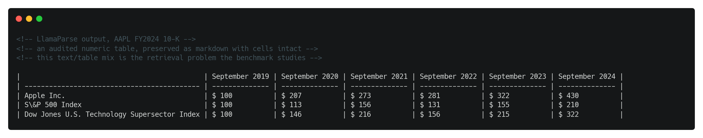
One node, one row
parent_item_header keeps the filing's structure queryable without leaking it into the embedded text.
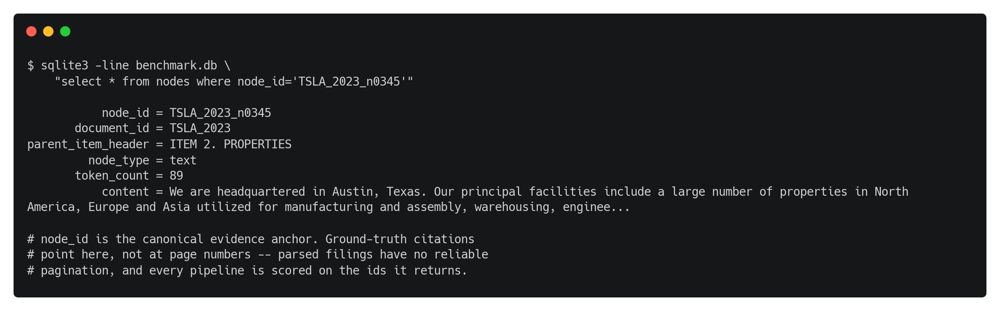
What each paradigm indexes
Same query, same corpus, same answerer. Only the retrieval strategy varies.
Three retrievers behind one interface
Each implements a single retrieve() contract, so the executor is blind to which paradigm it is running.
No model anywhere in P2
A custom tokenizer preserves currency, percentages and thousands separators. Using LlamaIndex's keyword index instead would have called an LLM and destroyed the semantic-versus-statistical contrast.
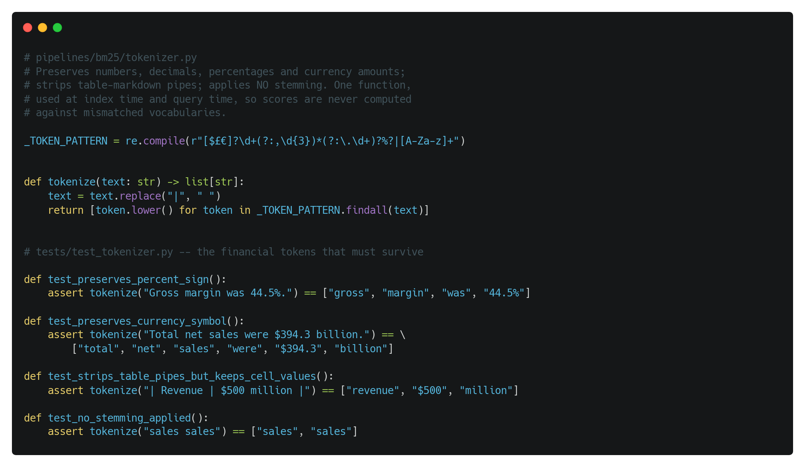
The tree is built once, never at query time
MockLLM is bound here for a reason: an unset LLM resolves to whatever the environment defaults to, which can be a paid endpoint. Traversal runs on embeddings alone.
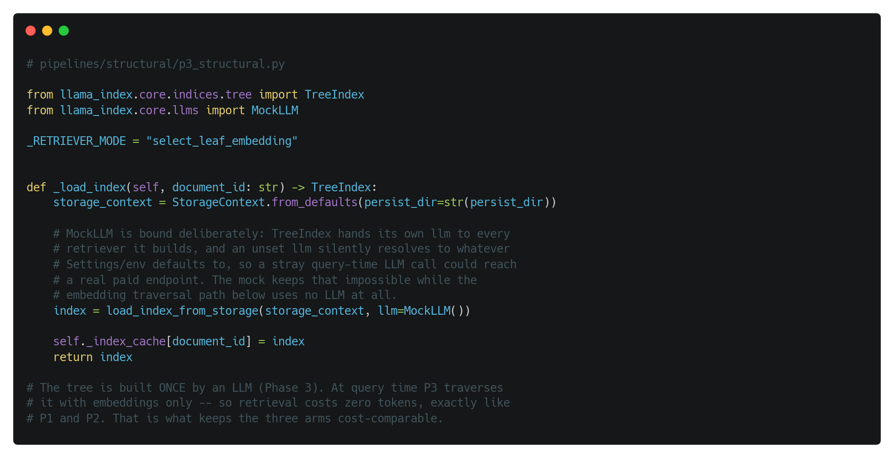
The pipeline sees the question and nothing else
No exemplars, no ground truth, no hint about where the answer lives.
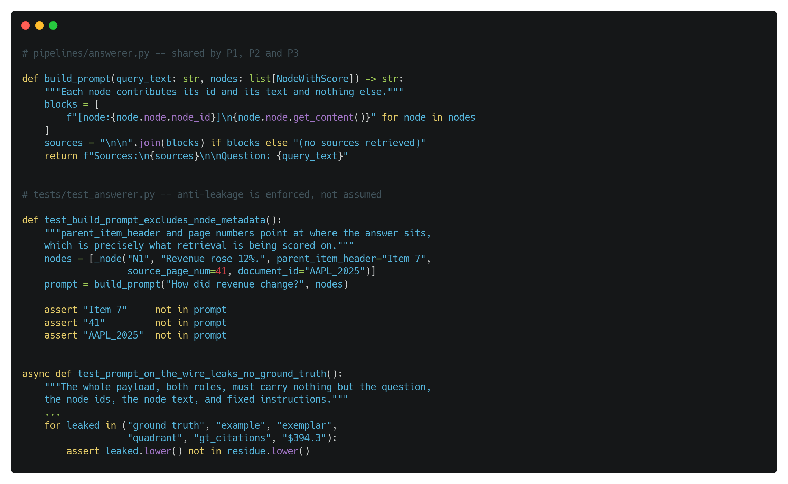
Three disjoint query sets
The set that teaches the judge and the set that validates it can never be the set that scores the pipelines.
Four difficulty quadrants
Text or table, stated directly or requiring inference. Twenty-five queries each.
Generator and Critic, different model families
A query is kept only when an independent Critic, from a different model family, finds the same evidence unaided.
One generated query, fully specified
gt_citations pins the answer to specific nodes, which is what makes retrieval measurable.
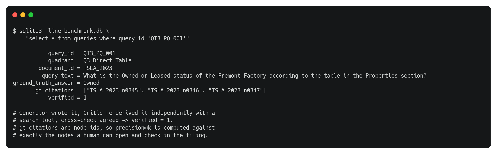
Complete and evenly filled
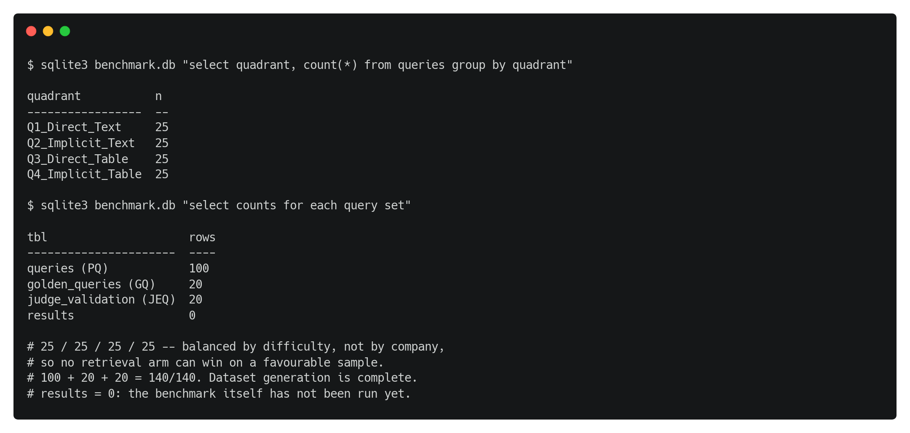
Twenty examples that teach the judge
Still unlabelled. This is the live blocker in front of the judge gate.
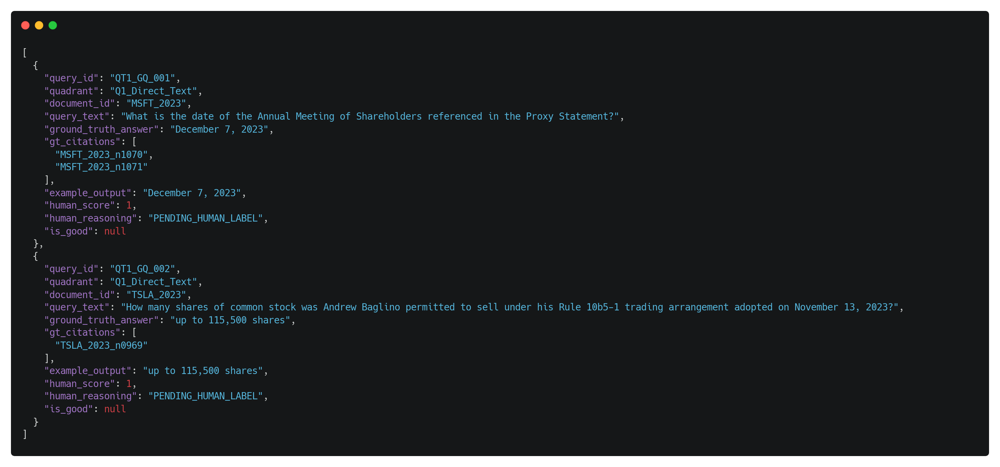
Validate the judge before trusting it
The judge must clear 80% agreement with human scoring on 60 held-out outputs before it is allowed near the 900-run benchmark.
Three pillars, not one score
Retrieval quality, answer quality and efficiency are reported separately, because a paradigm can win one and lose another.
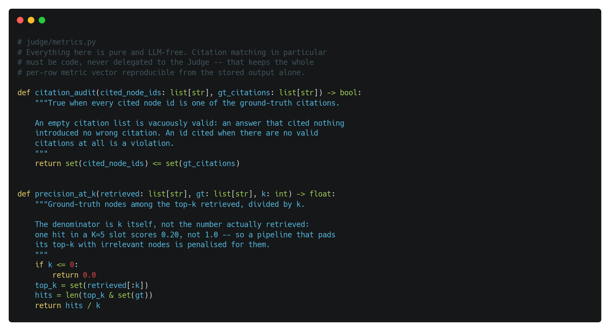
Five tables and one resumable key
UNIQUE (source_set, query_id, pipeline, k_value) is what lets an interrupted run resume without re-spending free-tier quota.
The row a single benchmark cell writes
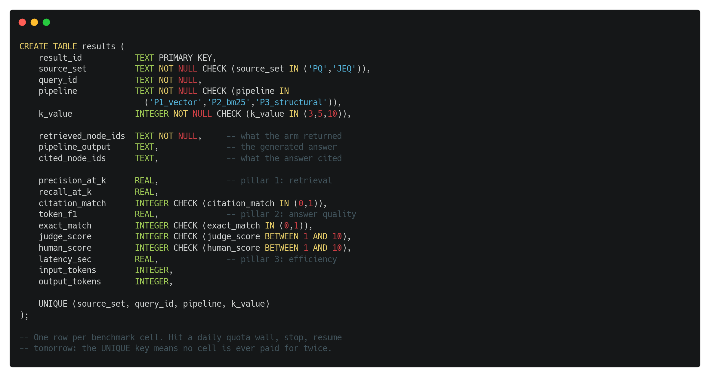
Three providers, five roles
Rate limits are absorbed by resumability rather than fought. On a free tier the limit is not negotiable.
Anti-self-grading, enforced in configuration
Generator and Critic are different families; so are Answerer and Judge. No model ever marks its own work.
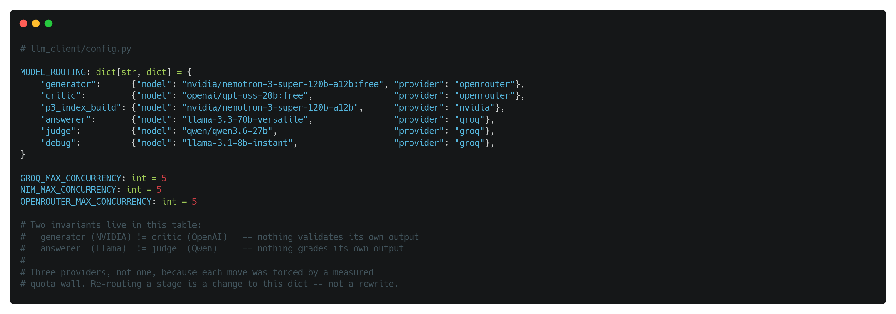
What a £0 budget costs in time
The slowest phase in the project. Throttled at 40 requests per minute, so wall clock is set by the rate limit and not by local hardware.
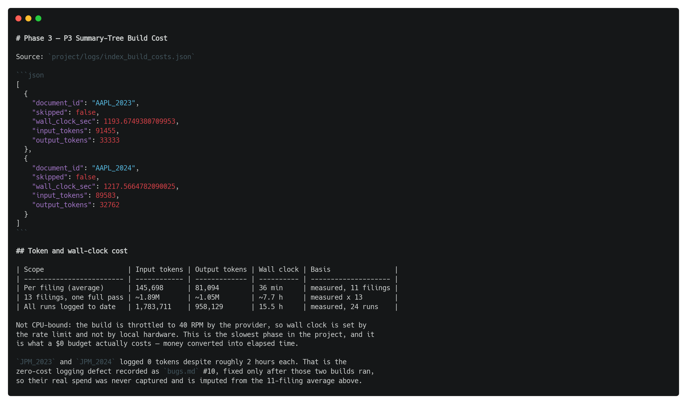
The matrix that has not been run yet
What changed, and why
Every deviation is logged with the reasoning behind it.
Where the project stands
Everything below runs locally
One filing, one query per difficulty quadrant. No answerer, no judge, no API call: precision and recall here are set arithmetic against citations already stored with the query.
============================================================================== RAG RETRIEVAL BENCHMARK · LIVE DEMO Three paradigms, one filing, one query per quadrant ============================================================================== Filing MSFT_2023 · 1,103 nodes Queries 4 · one per difficulty quadrant K 3 API calls 0 · retrieval is local for all three pipelines ------------------------------------------------------------------------------ STEP 1 · INDEXES ------------------------------------------------------------------------------ P3 structural : checking storage/summary_index/MSFT_2023 already built in Phase 3, reused as-is P2 statistical : checking storage/bm25/MSFT_2023.pkl already built, reused P1 semantic : checking storage/chroma/MSFT_2023 already built, reused ------------------------------------------------------------------------------ STEP 2 · RETRIEVERS ------------------------------------------------------------------------------ P2 statistical : loading BM25 corpus P3 structural : loading summary tree, MockLLM bound (no tokens spent) P1 semantic : loading bge-small embedder and bge-reranker cross-encoder ------------------------------------------------------------------------------ STEP 3 · RETRIEVAL, K=3 ------------------------------------------------------------------------------ Same query to each pipeline. Only the retrieval strategy differs.
The easy case: a fact stated in one sentence
P1 and P2 both land the ground-truth node first. P3 routes elsewhere.
============================================================================== QUERY 1 of 4 · QT1_PQ_003 · Q1_Direct_Text ============================================================================== "What does the company state regarding written comments from the SEC staf..." Ground truth n0387 ranked top-3 P@3 R@3 latency P1 semantic n0387* n0004 n1035 0.33 1.00 10.86s P2 statistical n0387* n0037 n1035 0.33 1.00 0.04s P3 structural n0966 n0811 n0965 0.00 0.00 8.66s * marks a node that is in the ground truth for this query 7 distinct nodes returned across the three pipelines, 0 returned by all three
The case that separates them
The answer lives in a four-node facilities table. P2 recovers two of the four, P1 one, P3 none.
============================================================================== QUERY 3 of 4 · QT3_PQ_003 · Q3_Direct_Table ============================================================================== "What is the total number of leased facilities internationally according ..." Ground truth n0388, n0389, n0390, n0391 ranked top-3 P@3 R@3 latency P1 semantic n0391* n0739 n0915 0.33 0.25 8.52s P2 statistical n0389* n0391* n0056 0.67 0.50 0.03s P3 structural n0917 n0915 n0918 0.00 0.00 8.69s * marks a node that is in the ground truth for this query 7 distinct nodes returned across the three pipelines, 0 returned by all three
Mean over four queries at K = 3
Note the latency column: P2 does this with no model at all.
============================================================================== SUMMARY · mean over 4 queries at K=3 ============================================================================== Precision@3 Recall@3 Mean latency ------------------------------------------ P1 semantic 0.42 0.69 9.25s P2 statistical 0.50 0.75 0.03s P3 structural 0.00 0.00 8.12s
Four queries on one filing illustrates the mechanism. Nothing here claims a winner. The benchmark proper is 900 runs and the results table is still empty.
Three disagreements, one question
Means over the four demo queries. Each paradigm fails somewhere different, which is the effect the benchmark is built to measure.
P1 semantic
Finds the answer through meaning, so it survives paraphrase. Pays for the rerank in latency, by more than two orders of magnitude against P2.
Fails when the answer shares no vocabulary with the question and no near neighbour is close enough.
P2 statistical
Strongest on this sample and effectively free to run. Matches exact figures and named terms directly.
Fails when the question paraphrases the filing, because term overlap is all it has.
P3 structural
Walks a summary tree from the root, so it commits to a branch early and cannot recover if that branch is wrong.
Fails when another section shares the query's vocabulary: here it routed into the Item 8 lease tables instead of Item 2 facilities.
Built, blocked, and not yet run
Complete
- Ingestion, parsing and node storage
- All three retrieval pipelines, with tests
- Adversarial dataset generation
- Judge and metrics, code-complete
Blocking Phase 7
- Golden queries unlabelled: 20 rows still
PENDING_HUMAN_LABEL - Judge gate unrun: needs 80% agreement on 60 outputs
- P1 and P2 indexes built for one filing so far, twelve remaining
The order the remaining work has to happen in
| Step | Depends on | Cost |
|---|---|---|
| Label the 20 golden queries | manual, unblocked | human time |
| Run the judge validation gate | labelled golden set | 60 judge calls |
| Build P1 and P2 for 12 more filings | unblocked | local CPU, £0 |
| Execute the 900-run benchmark | judge gate passed | free tier, resumable |
| Per-quadrant analysis | populated results | local |
A per-quadrant map of where each paradigm wins and loses, and a statement of which document structures defeat which retrieval strategy, rather than one overall winner. A result showing no difference between paradigms would falsify the hypothesis, and that is still a finding.